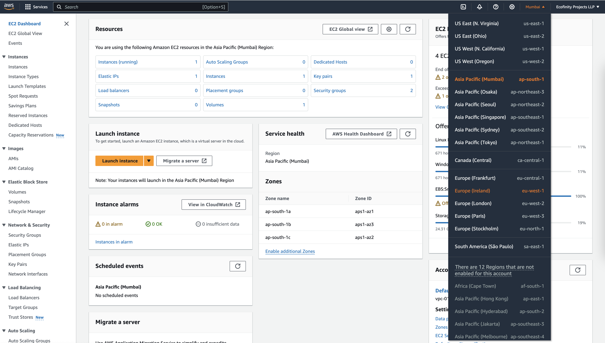
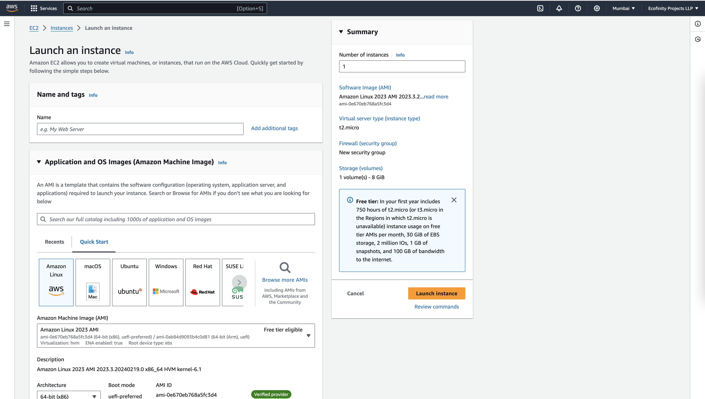
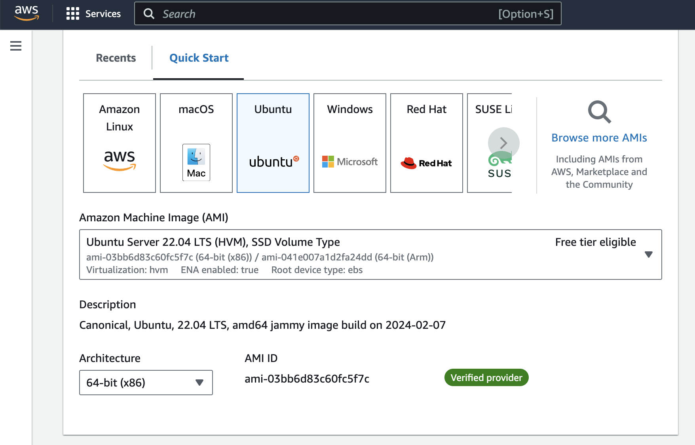
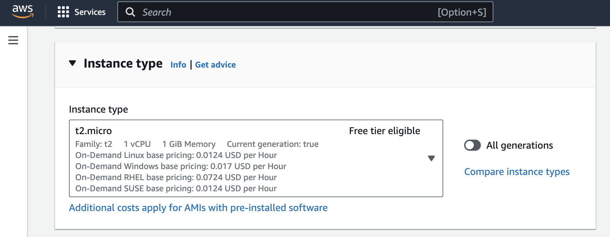
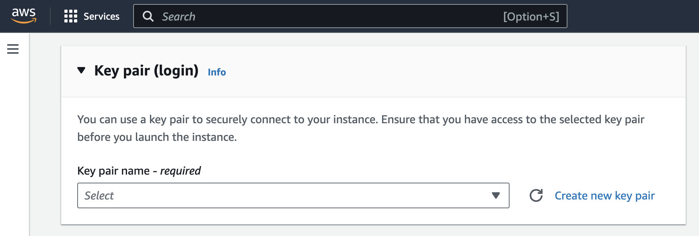
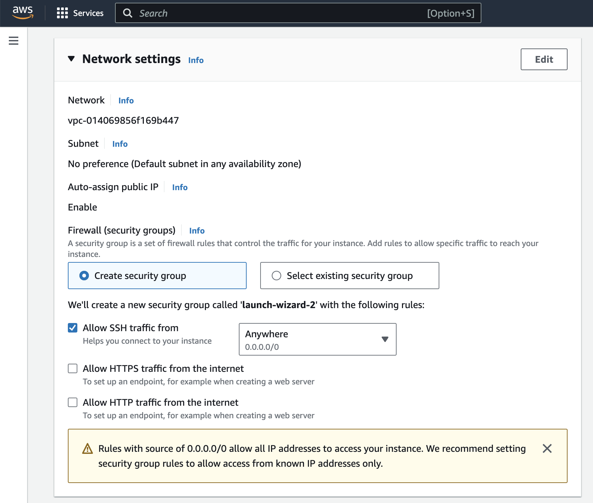
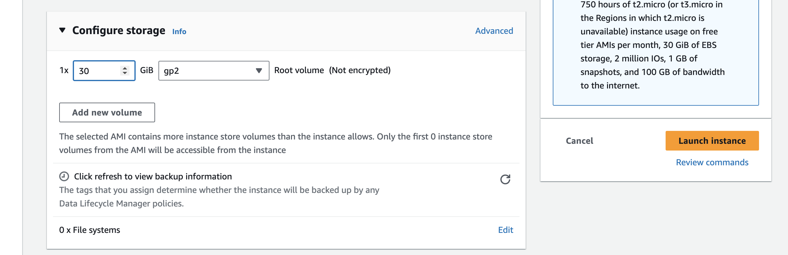

Step 1: Setting Up AWS Instance
Introduction:
In this section, we'll walk through the process of setting up the AWS infrastructure to host the PiVPN server. We'll specifically deploy an EC2 instance in the EU (Ireland) region (eu-west-1) to ensure optimal latency for TIA users based in Ireland. The instance will be of type t2.micro, featuring 1 vCPU, and 1GB RAM, running Ubuntu OS with default storage (30GB).
Workflow:
- Log in and Select Region:
- Log in to your AWS Management Console.
- Ensure that you have selected the appropriate region. Navigate to the top-right corner of the console, click on the current region, and choose "Europe (Ireland)" (eu-west-1) from the dropdown menu.

- Create EC2 Instance:
-
Navigate to the EC2 dashboard.
-
Click on "Launch Instance" to begin the instance creation process.

- Choose "Ubuntu" as the operating system for the instance.

- Select the desired instance type "t2.micro" from the list of available options.

- Create Key Pair If you do not have an existing key pair, you will need to create one.

- Network Setting - Leave it default, we will add Inbound rules later.

- Leave the storage at the default 30GB

Assign Elastic IP:
- Allocate an Elastic IP address to the EC2 instance to maintain a consistent public IP address.
- Navigate to the Elastic IPs section in the EC2 dashboard and allocate a new address.
- Associate the allocated Elastic IP with the EC2 instance to ensure persistent connectivity.
Important
- Key Pair:
- If you do not have an existing key pair, you will need to create one.
- A key pair is crucial for securely accessing your EC2 instance via SSH. It consists of a public key, which is stored on the instance, and a private key, which you must keep secure.
- If you lose your private key, you will lose access to your EC2 instance. It's essential to securely store your private key and avoid sharing it with unauthorized users.
Access the Instance:
There are two primary methods to access your EC2 instance: through the AWS Management Console and via SSH using a private key (.pem file).
Access via AWS Management Console:
- To access the instance via the AWS Management Console:
- Navigate to the EC2 dashboard.
- Locate your running instance in the Instances section.
- Select the instance, and from the "Actions" dropdown menu, choose "Connect."
- Follow the provided instructions to connect to your instance directly from the browser using EC2 Instance Connect.
Access via SSH using Private Key:
- To access the instance using SSH with a private key (.pem file):
- Open your terminal or SSH client (e.g., PuTTY for Windows).
- Navigate to the directory where your private key file (.pem) is stored.
- Set the permissions for the private key file to ensure it is not publicly viewable: chmod 400 your-key.pem - Connect to your EC2 instance using SSH, specifying the private key file and the public DNS or IP address of the instance: ssh -i your-key.pem ubuntu@your-instance-public-dns - Replace "your-key.pem" with the filename of your private key and "your-instance-public-dns" with the public DNS or IP address of your EC2 instance.
Access via PuTTY (Windows):
- If you're using Windows, you can also access your EC2 instance using PuTTY:
- Convert your .pem private key file to a PuTTY-compatible .ppk file using PuTTYgen.
- Open PuTTY and configure the connection settings by providing the public DNS or IP address of your instance and loading the converted .ppk private key file.
- Click "Open" to initiate the SSH connection.
After successfully connecting to your EC2 instance, you'll have access to the command-line interface (CLI) of the instance, where you can perform further configurations and setup, including PiVPN installation and configuration.